×
×PivotXP · Experiential Technology
The
Experience
Catalog
Prepared for Jack Morton · August 2026
Capture systems, gamification, AI enhancements, and physical takeaways — every unit in this catalog is built, wrapped, and supported by Pivot for activations that cannot fail.
01The Booth Line
Six capture systems, one standard: broadcast-quality output, full custom wraps, and uptime your producers can bet on. Every unit works with InTouch and supports AI background removal.
▶ Thumbnails are clickable — sample videos play in your browser.
PB·01Selfie Station
The ring-light icon, rebuilt as brandable real estate. A freestanding kiosk with a halo light and a full-wrap column — keeps a line moving all day.
Stills · GIF · Boomerang · Video / SMS · Email · QR / 2 ft footprint
PB·02PRO
DSLR-grade capture with an adjustable head and dual-sided display — the photographer-quality booth without the photographer.
DSLR capture · Stills · GIF · Boomerang · Video · Physical takeaways
PB·03Elevated Kiosk
The statement piece. Full-body kiosk with programmable LED edge lighting, a large portrait touch display, and DSLR-grade capture — optional printing puts a takeaway in hand in seconds.
DSLR capture · Optional printing · Physical takeaways
01The Booth Line
Continued — motion systems: robotic, orbital, and bullet-time capture.
▶ Thumbnails are clickable — sample videos play in your browser.
PB·04Robot
A rail-mounted robotic arm with programmable, cinematic slow-mo moves. A crowd magnet that shoots like a camera operator.
Programmable moves · Cinematic slow-mo
PB·05360 Camera
Slow-motion orbit video with branded overlays, delivered before guests walk away. Mount it on truss for cinematic vehicle capture, or floor-mount when space is tight.
Truss or floor mount · Instant delivery
PB·06Array
Bullet-time from a 7- or 14-camera gantry. Every lens fires in sync to freeze the moment, then sweep around it — branded end to end.
7 or 14 cameras, synced · Freeze + sweep
02AI Enhancements
A software layer that works on every booth in the line — rendered in seconds, on site.

ENH·01AI Image Regeneration
A guest’s photo becomes the input to a full prompt — regenerated inside a brand-built scene.
ENH·02Themed Regeneration
The same engine, art-directed to a theme — “Western Glam” at CMA Fest.
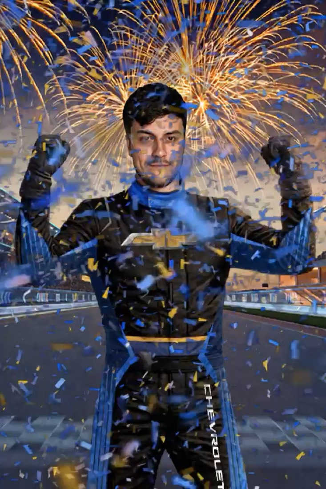
ENH·03AI Head Swap
The guest’s face on a pre-approved branded body — every logo 100% on point.

ENH·04AI Background Removal
Subjects stay exactly as shot — placed naturally into the scene.
ENH·05Personalized Signage
Guests type their name and it renders into the scene — like this neon marquee.
03Physical Takeaways
These leave the event on refrigerators, desks, and binders — and keep the brand living there long after load-out.
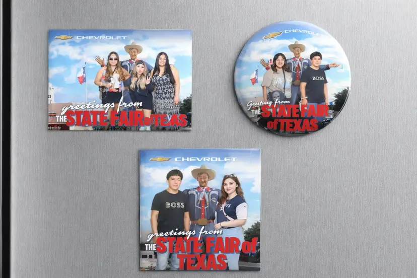
TA·01Magnets
Pressed on site, minutes after capture — square, round, or postcard-sized. State Fair of Texas for Chevrolet.

TA·02Postcards
Front: the guest with Big Tex. Back: an art-directed mailer with a QR to the brand.
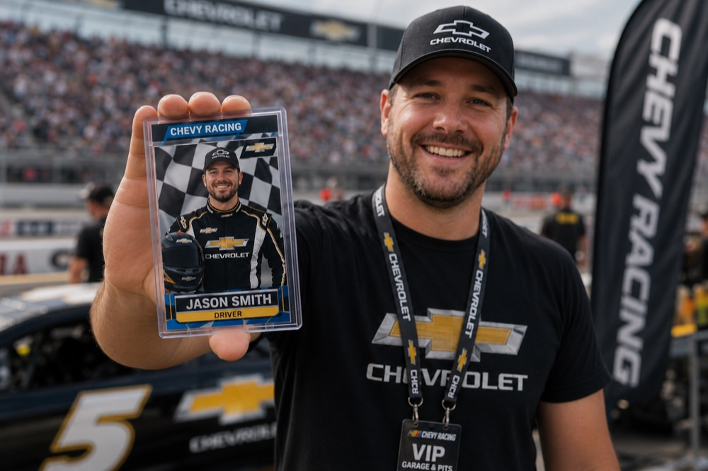
TA·03Trading Cards
Every guest becomes a rookie card — sleeved, collectible, branded. Lexus, Ticketmaster, Chevy Racing.
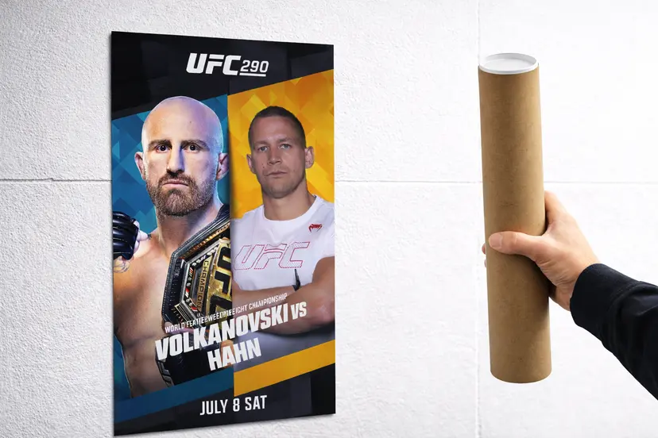
TA·04Posters
Full-size prints of the money shot — at UFC weigh-ins, fans leave with the proof.
04Gamification & Custom Software
Give guests something to win and they’ll queue for it — custom game builds with real-time scoring.
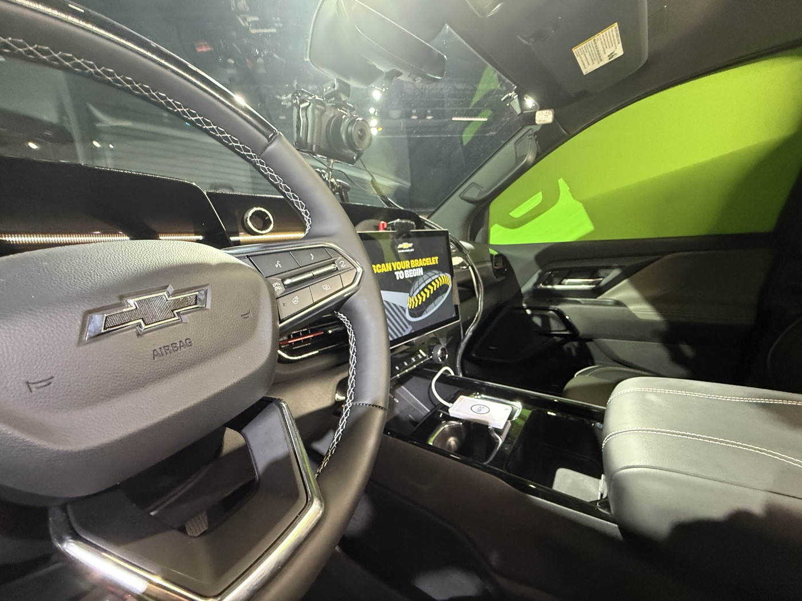
GAME·01Car Karaoke
Guests take the driver’s seat and perform — share-ready music video at the door. Chevrolet, CMA Awards.
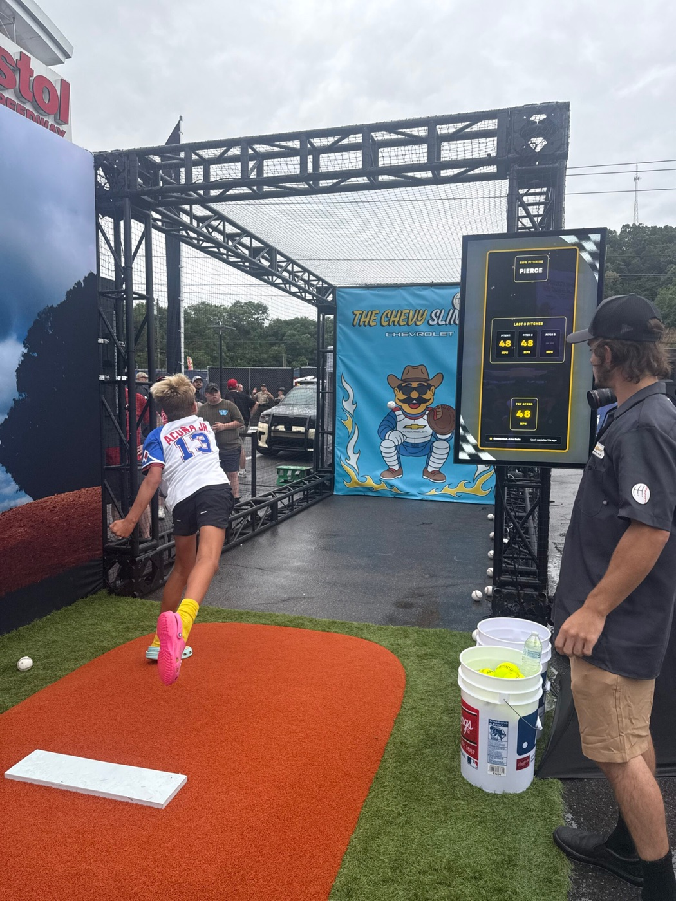
GAME·02Pitch Against the Machine
A radar-tracked pitching duel against a pro on screen. Chevy at Speedway Classic.
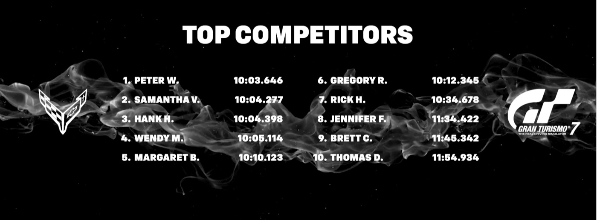
GAME·03Leaderboards
Live standings on any screen, updated the moment a score lands. LIV Golf, NFL Bootcamp, US Cellular.
05Platform & Connectivity
One identity system underneath every touchpoint — so the data you promised the client actually shows up.
PLAT·01Event Internet
Rented by the event, deployed by our crew. Starlink units put full-bandwidth internet anywhere outdoors — a parking lot, a ski slope, a fairground — and for footprints that need extra coverage, we run redundant Wi-Fi systems with live backups. The activation never waits on venue internet.
Starlink rental fleet · Redundant Wi-Fi mesh · Live failover backups · Full outdoor coverage
Every product works with InTouch, the lead-capture system running the event.
01Register once on InTouch’s tablets at the entrance.
02QR code or RFID bracelet — one credential for the whole footprint.
03Tap at any Pivot piece — nobody enters their info twice.
04Data flows back — secured in InTouch, no new compliance surface.
06In The Field
Beyond the booth line: full custom sets, broadcast desks, and branded builds — designed, fabricated, and run by Pivot crews.
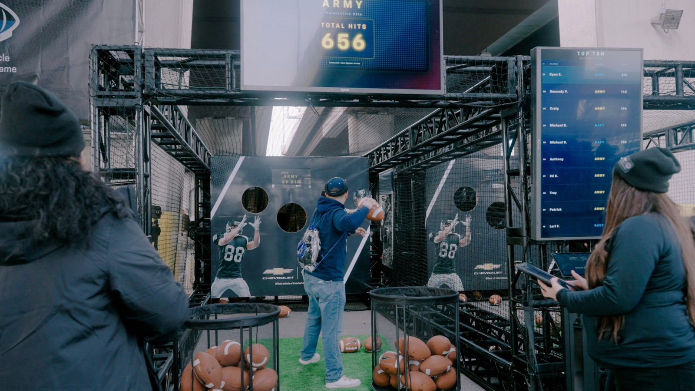
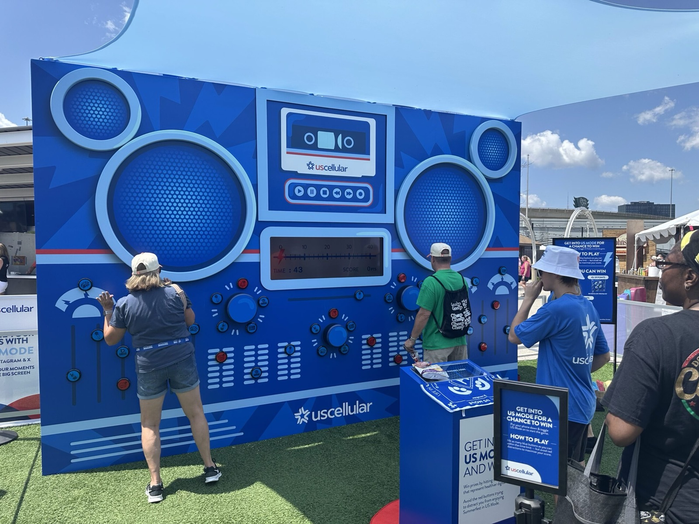
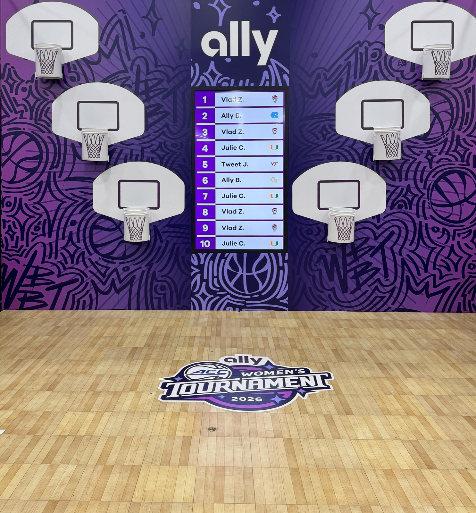
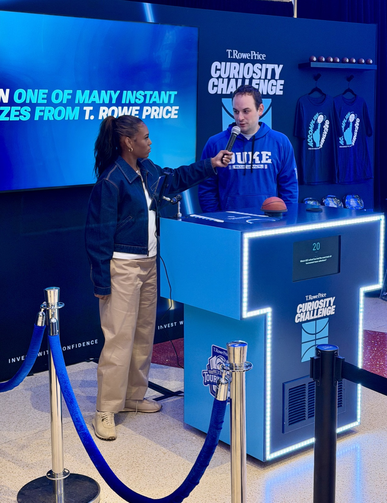
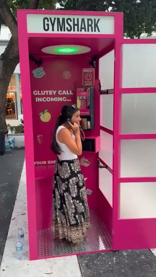
07Proof of Work
The online edition of this catalog runs three real client builds you can drive in the browser — no install, any device.
Built for activations
that cannot fail.
Booths, games, AI, takeaways, connectivity, and the software underneath it all — one vendor, one standard, wrapped in your client’s brand.
pivotxp.github.io/jack-morton-catalog
PivotXP × Jack Morton · pivotxp.com · mikah@pivotxp.com